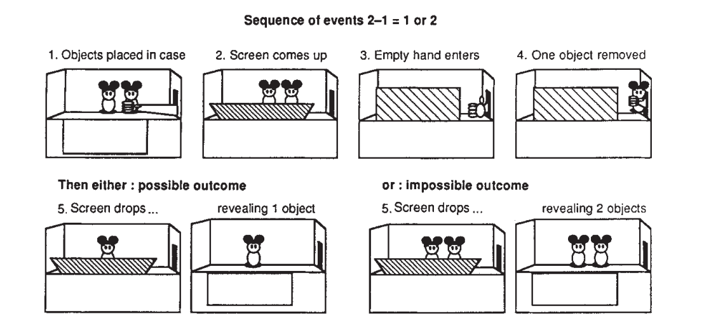

Where mathematics comes from

Tomas Petricek, The Alan Turing Institute
tomasp.net | tomas@tomasp.net | @tomaspetricek
The nature of mathematics
Why does it matter & cognitive approach

Why nature of mathematics matters
- Where do laws of arithmetic come from?
- Would aliens have lambda calculus?
- Why can mathematics explain the world?
- How do we make mathematics accessible?
Cognitive science of mathematics
The only mathematics we know or can know is
a brain-and-mind-based mathematics.It is up to cognitive science and the neurosciences to (...)
apply the science of mind to human mathematical ideas.Lakoff, Nunez (p1, xi)
Components of the analysis
Innate arithmetic
Babies have some mathematical capacities
Conceptual metaphors
Links concepts via neural conflations
Layering metaphors
Explain more abstract mathematical concepts
Innate arithmetic experiments
Metaphors
Cognitive reconstruction of mathematics
Metaphors are central to thought
One of the principal results in cognitive science is that abstract concepts are typically understood, via metaphor, in terms of more concrete concepts.
Lakoff, Nunez (p39)
Everyday mathematical understanding
Mathematical ideas (...) are often grounded in everyday experience.
Many mathematical ideas are ways of mathematicizing ordinary ideas, as when the idea of a derivative mathematicizes the ordinary idea of instantaneous change.
Lakoff, Nunez (p29)
Analysing mathematical metaphors
Grounding metaphors
Sets are like physical containers
Linking metaphors
Numbers as sets, i.e. \(\emptyset, \{\emptyset\}, \{\emptyset, \{\emptyset\}\}\), ...
Introduction of elements
Metaphors introduce concepts into target domain
Arithmetic
Metaphors for arithmetic
Metaphors for arithmetic
Arithmetic is like...
- Object collection
- Object construction
- Motion along a path
Arithmetic laws...
Come from physical experience!
Arithmetic is object collection
Linguistic examples
Add onions and carrots to the soup
Which is bigger, 5 or 7?
Equational properties
Adding A to B gives the same result as
adding B to A for object collections
Limitations of the metaphor
Zero in terms of collections?

Arithmetic is movement along a path
Linguistic examples
4.9 is near 5, result is around 42
Equational properties
Moving from A by B gives the same
result as moving from B by A.
Nice features
Explains zero and fractions well
Beyond arithmetic
Infinity, Booleans, sets and \(e^{\pi i} + 1 = 0\)
Other mathematical metaphors
Basic metaphor of infinity
Infinity as the end of iterative process
Algebra
Folk theory of essences, substance and forms
\(e^{\pi i} + 1 = 0\)
\(\pi i\) as rotation, \(e^x\) turns multiplication into addition

Basic metaphor of infinity
Adding concepts to target domain
Metaphor adds actual infinity
Explaining actual infinity
\(\infty\) as the end of an iterative process

Implications
What can we learn from cognitive science?
The Romance of Mathematics
- Mathematics is an objective feature of the universe
- It has absolute truths about any possible universe
- It characterizes the nature of rationality
- Mathematical truths are universal and absolute
The Romance of Mathematics
The Romance of Mathematics makes a wonderful story (...). It perpetuates the mystique of the Mathematician [as someone who is] more rational, more probing, deeper, visionary. (...) But sadly, for the most part, it is not a true story.
Lakoff, Nunez (p341)
Is mathematics independent of culture?
Everything in the universe has an essence (...). [S]ince Euclid (...)
essence can be given by a small number of obviously true postulates.[The idea] that theories, like buildings, must have secure, solid, permanent foundations on which all else is built is at least as old as Aristotle.
It has been governing metaphor behind [Western] theories that
pretend to give an account of certain and absolute knowledge.Lakoff, Nunez (p355-358)
Metaphors in computer science
Metaphors matter
The choice of metaphors affects what we can think
What metaphors we use?
What cognitive metaphors lead to \(\lambda\)-calculus, monads, etc.?
Summary
Would aliens understand \(\lambda\)-calculus?
Would aliens understand \(\lambda\)-calculus?
Metaphors for logic
Logic is derived from container schema.
Would aliens have containers?
Imagine gaseous universe that does not have "in".
Where mathematics comes from
The nature of mathematics
Human-based, not Platonic ideals
Constructed via metaphors
Grounding (physical experience) and linking
Important consequences
Metaphors change how we think & teach